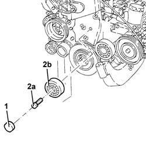
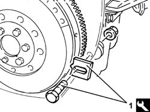
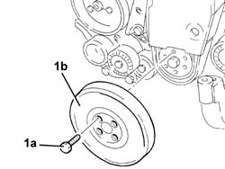
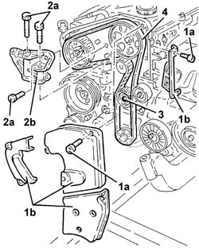
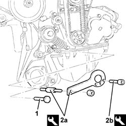
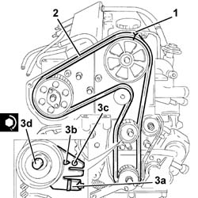

1032B16 Toothed timing drive belt - R.R. with engine removed
- Path
- Procedures > 10 ENGINE > 1032 timing system > 1032B BELT-DRIVEN TIMING SYSTEM > 1032B16 Toothed timing drive belt - R.R. with engine removed
- Kind
- repair procedure (removal / refitting; the operation number is the code)
- Applies to
- engines: 2.4 JTD 10V; all production periods
- Interactive page
- https://sloeber94.github.io/elrnDB-lThss/en/#/498121
Applies to: engines: 2.4 JTD 10V; all production periods
 Removing
Removing
 Refitting
Refitting- Position the engine on a suitable workbench.
1. Remove the engine components single belt pulley plug.
2. Undo the bolt (2a) and remove the engine components single belt pulley (2b).

Applies to: engines: 2.4 JTD 10V; all production periods
1. Fit the flywheel lock.
 | Description | Code | Function |
|---|---|---|---|
1 | Counter-torque | 1.860.846.000 | Flywheel lock |

Applies to: engines: 2.4 JTD 10V; all production periods
1. Undo the bolts (1a) and remove the crankshaft pulley (1b).
- Remove the flywheel lock.
| Description | Code | Function |
|---|---|---|---|
. | Counter-torque | 1.860.846.000 | Flywheel lock |

Applies to: engines: 2.4 JTD 10V; all production periods
1. Undo the bolts (1a) and remove the timing drive belt guards (1b).
2. Undo the bolts (2a) and remove the power unit reaction rod mounting bracket (2b).
3. Loosen the timing belt tensioner nut.
4. Release and remove the toothed timing drive belt.

Applies to: engines: 2.4 JTD 10V; all production periods
Refitting
Removing1. Undo the bolt fixing the crankcase front cover shown in the diagram.
- Temporarily fit the toothed timing drive belt on the drive pulley.
2. Fit the tool (2a) and fasten it using the calibrated screw (2b).
| Description | Code | Function |
|---|---|---|---|
2a | Template | 1.860.905.000 | Engine tuning |
| Description | Code | Function |
|---|---|---|---|
2b | Calibrated screw | 1.860.905.010 | Engine tuning |

Applies to: engines: 2.4 JTD 10V; all production periods
1. Check that the timing references are aligned.
2. Fully fit the toothed timing drive belt.
3. Use a screwdriver in the opening (3a) for leverage until the reference for the tensioner (3b) corresponds with the reference opening (3c) and tighten the moving tensioner nut (3b) to the recommended torque in this position.
 | Value - daNm | Fastening | Component | Ø |
|---|---|---|---|---|
3d | 4.6 ÷ 6.6 | Nut | MOBILE TIMING TENSIONER | M10 |
- Remove the tools.
| Description | Code | Function |
|---|---|---|---|
. | Template | 1.860.905.000 | Engine tuning |
| Description | Code | Function |
|---|---|---|---|
. | Calibrated screw | 1.860.905.010 | Engine tuning |
- Tighten the bolt fixing the crankcase front cover removed previously.

Applies to: engines: 2.4 JTD 10V; all production periods
- Rotate the crankshaft through two revolutions.
- Check once again that the timing references and the tensioning reference on the moving tensioner correspond.
- Place the power unit reaction rod mounting bracket back in its housing and secure it by tightening the bolts to the recommended torque.
| Value - daNm | Fastening | Component | Ø |
|---|---|---|---|---|
. | 4.6 ÷ 6.6 | Bolt | REACTION LINK BRACKET ON ENGINE | M10 |
- Fit the timing belt covers and secure them using the bolts.
- Fit the flywheel lock.
| Description | Code | Function |
|---|---|---|---|
. | Counter-torque | 1.860.846.000 | Flywheel lock |
- Position the crankshaft pulley in its housing and secure it tightening the bolts to the recommended torque.
| Value - daNm | Fastening | Component | Ø |
|---|---|---|---|---|
. | 2.3 - 3.3 (counter-balance shaft pulley side) | Bolt | CRANKSHAFT PULLEY | M8 |
- Remove the flywheel lock.
| Description | Code | Function |
|---|---|---|---|
. | Counter-torque | 1.860.846.000 | Flywheel lock |
- Place the single engine components belt pulley back in its housing, secure it tightening the bolt to the recommended torque, then refit the plug.
| Value - daNm | Fastening | Component | Ø |
|---|---|---|---|---|
. | 2.3 ÷ 3.3 | Bolt | SINGLE BELT FIXED TENSIONER ENGINE | M8 |